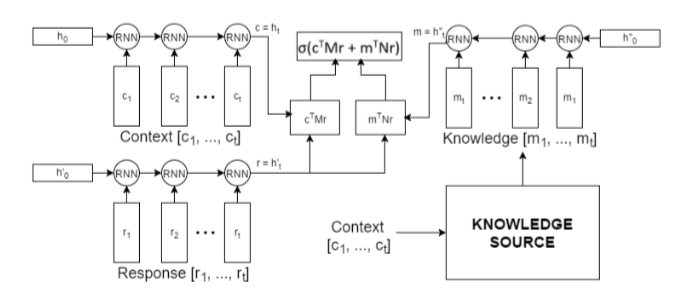
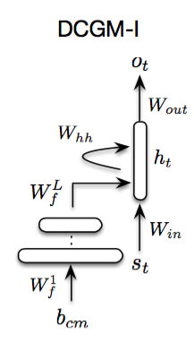

A Neural Network Approach to Context-Sensitive Generation of Conversational Responses #PaperWeekly#
本文分享的这篇paper是旨在训练一个data driven open-domain的bot，在生成response的时候不仅仅考虑user message（query），而且考虑past history作为context。paper的题目是A Neural Network Approach to Context-Sensitive Generation of Conversational Responses，作者来自蒙特利尔大学、乔治亚理工、facebook和微软研究院，本文最早发于2015年6月。
开放域的端到端response生成在今年已经不是什么新鲜事了，各种复杂的网络，考虑各种各样的信息，然而在去年的这个时候，本文就提出了一种data driven的解决方案，是一篇有开创性的paper。
bot的几大核心问题，包括：
1、response generation（或者selection）
2、dialogue state tracking
3、user modeling
不管是开域的还是闭域的bot都需要解决好以上三个问题才能做出一个高质量的bot。本文针对的问题是第一个，用的思路也是现在看来比较自然的一种，用语言模型来生成response。
考虑history utterances的responses生成问题，先定义一些参数，m表示message（query），c表示context，r表示response。本文要解决的其实是下面这个问题：

1、Tripled Language Model
将c，m，r作为一句话来理解，给定c和m之后，不断地生成r的内容。
这个模型存在一个比较严重的问题是c如果过长的话，用BPTT训练不了RNNLM。（其实换作LSTM或者GRU单元就会好很多。）
2、Dynamic-Context Generative Model I

将c和m用词袋模型表示，然后拼接起来，作为输入，通过一个简单的FNN，得到输出，即c和m vector representation。
3、Dynamic-Context Generative Model II

与2不同的地方在于，将c和m单独作为输入，通过一个简单的FNN，得到c和m的vector representation。
这篇paper针对的问题很有意义，history information的建模对于bot在解决实际工程应用的时候意义重大，会让你的bot看起来更加的智能，和分析了用户日志的web应用会带来更好的服务是一个道理。本文的将具体的context包含到了模型中，在真正应用的时候，离线系统根据user conversation logs build一个user profile会更加实用，因为确实不可能把所有的history都丢到模型中一起来算。